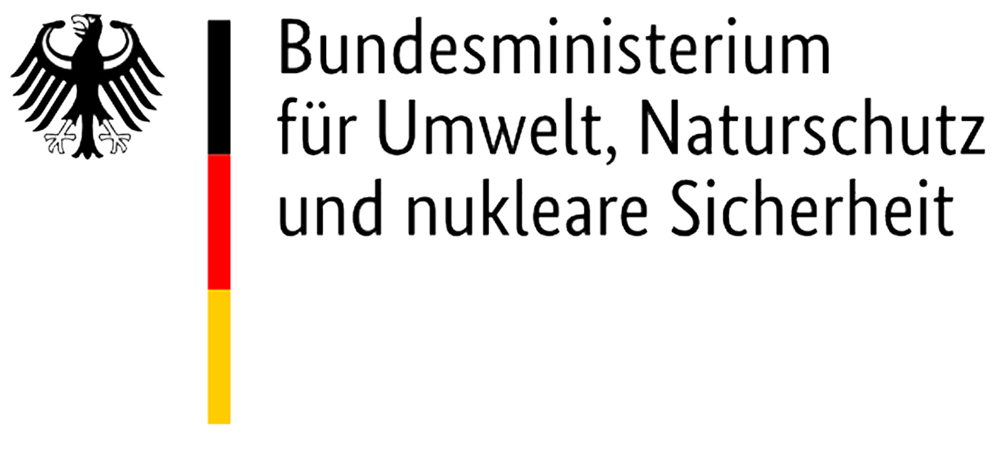
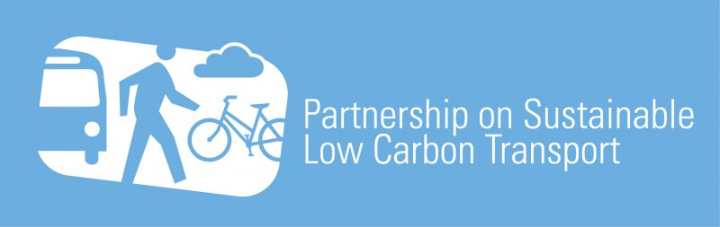

Will New Mobility Deliver Sustainable Transport for All
January 17—18, 2019
The World Bank and EMBARQ, the sustainable mobility initiative of WRI Ross Center for Sustainable Cities invite you to Transforming Transportation 2019 at the World Bank Headquarters in Washington, DC. #TTDC19
This year’s conference will focus on how new technologies, data platforms and business models are integrating with current transport modes to solve old problems, from efficiency and equity to safety, and how new mobility can help address climate change. We will discuss the current and future challenges faced by countries across the world in providing sustainable mobility for everyone.
Organizers
Sponsors


